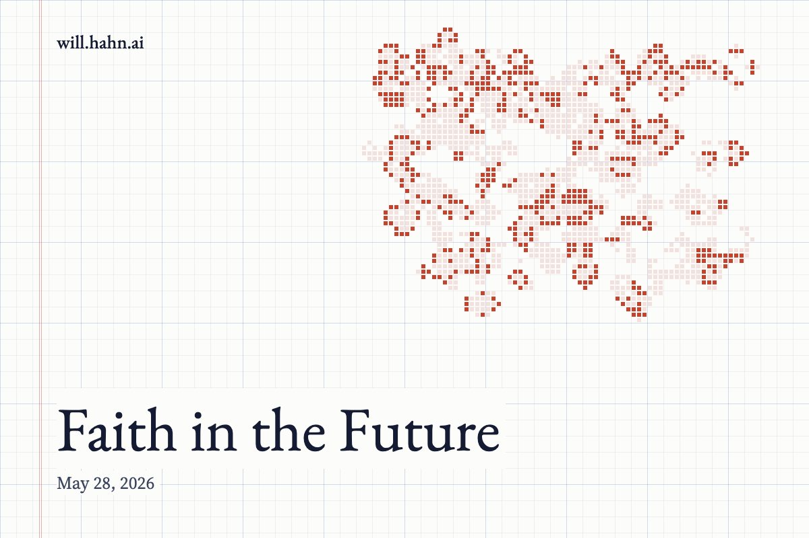

Faith in the Future

The Operating System
Modern anthropology made one of the great blunders of the last century.
It looked at religion and saw myth. It saw ritual, taboo, sacrifice, prayer, temples, saints, ghosts, gods, prohibitions, feasts, funerals, songs. It saw people kneeling in front of invisible structures and concluded: coping mechanism.
A story to soften death.
A narcotic against terror.
A hallucination with architecture.
And then, satisfied with its sophistication, it threw the baby of creation out with the bathwater.
But religion was never merely a theory about where lightning comes from. It was never merely a primitive physics, later replaced by better instruments. Religion was something much deeper and stranger: an operating system.
Not just for the private mind, but for culture itself.
It told people what to notice. What to ignore. What to fear. What to love. What to die for. What to forgive. What to build. What not to touch. It created a hierarchy of meanings in a world otherwise too bright, too violent, too infinite to survive directly.
A human being does not live in reality. Not raw reality. No one does.
A human being lives inside an interface.
And religion was one of the oldest, most powerful interfaces ever made.
The Interface Is Not the Machine
The mistake cuts both ways.
The skeptic looks at religion and says, “This is only an interface,” and thinks he has disproven it.
The fanatic looks at the interface and says, “This is the whole machine,” and thinks he has possessed it.
Both are lost.
A graphical user interface is not the computer. The little folder icon on your screen is not actually a folder. The trash can is not actually a metal bin. The desktop is not actually a desktop. These are symbols, abstractions, compressions. They hide the abyss of bits, voltage, memory addresses, protocols, and machine code beneath them.
But that does not make them false.
It makes them usable.
The interface is not a lie because it simplifies. It is a mercy because it simplifies. Without it, the machine becomes inaccessible. Too much truth at the wrong resolution is indistinguishable from chaos.
So it is with reality.
Whatever the Divine is, whatever the ultimate structure of being is, whatever reality looks like beneath perception, language, ritual, mathematics, and myth, it is not something the naked human mind can stare at directly for long. We are finite organisms with finite nervous systems. We do not see the world as it is. We see the world as we can survive it.
The interface is not the final truth.
But without the interface, there is no contact at all.
Faith Is Not Certainty
This is where the modern mind becomes confused.
It thinks faith means certainty.
It imagines the faithful person as someone who has eliminated doubt, someone who has shut the windows, bolted the doors, and decided never to ask another question.
But that is not faith. That is possession. That is ideology wearing sacred clothing.
Faith is not the absence of doubt. Faith is motion in the presence of doubt.
Faith is what lets you act before the proof is complete. It is what lets the scientist run the experiment, the founder build the company, the artist begin the impossible work, the lover make the vow, the monk keep searching, the civilization raise stone toward heaven.
No one does anything meaningful without faith.
To start is to believe more than the evidence permits.
To continue is to doubt enough to improve.
That is the hidden engine: faith and doubt are not enemies. They are a coupled system.
Faith gives direction.
Doubt gives correction.
Faith says, “There is something here worth pursuing.”
Doubt says, “You have not found it yet.”
Faith without doubt becomes brittle, paranoid, and cruel. It cannot learn because learning feels like betrayal. It cannot revise because revision feels like collapse. It confuses loyalty with blindness.
But doubt without faith becomes sterile. It becomes a solvent that dissolves every structure before anyone can live inside it. It can critique, but it cannot create. It can expose, but it cannot build. It can end illusions, but it cannot tell you what to do when the illusions are gone.
Without doubt, faith is just a slogan.
Without faith, doubt is just an exit.
The Tolerance of Ambiguity
The deepest minds are not the ones that eliminate ambiguity. They are the ones that can tolerate it without going limp.
This is true in science. The scientist must believe the hypothesis enough to test it, but disbelieve it enough to see when it fails. Too much faith, and the data becomes an inconvenience. Too much doubt, and no experiment is ever worth beginning.
It is true in religion. The seeker must believe there is something to seek, but doubt every idol, every premature formulation, every easy answer that claims to have captured the infinite in a sentence.
It is true in the self. You must believe you can become more than you are, while doubting the stories you currently tell about yourself. Too much faith in your identity, and you calcify. Too much doubt in your possibility, and you disappear.
The balance is not decorative. It is structural.
Faith and doubt are not two teams fighting for control of the soul. They are the alternating current by which the soul remains alive.
One opens the door.
The other checks whether you have walked into a prison.
Everyone Has a Religion
The modern secular person often imagines themself as having escaped faith.
This is almost never true.
They have usually only changed religions.
The staunch atheist may reject God, but they still carries sacred objects: Reason, Progress, Humanity, Science, Liberation, the Market, the Revolution, the Self. They still has blasphemies, heresies, saints, demons, purity codes, initiation rituals, and visions of salvation.
The question is not whether you have faith.
The question is whether you know where you have placed it.
A person without an explicit religion does not become religionless. He becomes unconsciously religious. His operating system still runs; he simply stops being able to inspect it. He mistakes his defaults for reality. He thinks his inherited moral instincts are obvious. He thinks his culture’s metaphysics are just common sense. He thinks he has no temple because he no longer sees the walls.
This is dangerous.
An unexamined religion is still a religion. It is just one that cannot repent, cannot reform, cannot name its gods, and cannot explain its sacrifices.
When the System Becomes an Idol
But the opposite danger is just as real.
If you have no operating system, you are lost.
If you confuse the operating system for the machine, you are also lost.
This is the tragedy of fundamentalism in every domain: religious, scientific, political, personal. A living interface hardens into an idol. A map becomes a territory. A symbol becomes a cage. The thing meant to mediate reality begins to replace it.
The religious person may confuse doctrine with God.
The scientist may confuse method with truth.
The activist may confuse justice with power.
The rationalist may confuse models with reality.
The self-improver may confuse optimization with life.
Every operating system has this risk. It can help you see, and then slowly teach you that only what it shows you is real.
That is why doubt is not the enemy of faith. Doubt is the immune system of faith. It prevents the sacred from becoming merely mechanical. It keeps the window clean. It reminds the believer that the frame is not the sky.
The Divine as Compression
The human mind cannot hold totality.
So it compresses.
A symbol is compressed reality. A ritual is compressed behavior. A doctrine is compressed metaphysics. A story is compressed time. A prayer is compressed attention. A moral law is compressed survival wisdom.
This is not weakness. It is how finite beings touch what exceeds them.
Even science works this way. Equations are compressions. Models are interfaces. A map of spacetime is not spacetime. A quantum field equation is not the thing itself shimmering beneath measurement. It is a handle. A way to grip the ungrippable.
Religion, at its best, is not the rejection of reality. It is a high-level symbolic interface with the deepest structures of value, finitude, death, obligation, awe, and transcendence.
It does not merely ask, “What exists?”
It asks, “What is worth serving?”
That question cannot be escaped. Only buried.
And buried gods have a way of becoming monsters.
The Balance
The answer is not blind belief.
The answer is not endless skepticism.
The answer is disciplined permeability.
To believe enough to move.
To doubt enough to learn.
To commit without pretending the mystery is exhausted.
To question without letting questioning become cowardice.
To use the interface without worshiping the interface.
To seek the real while admitting that the real, encountered without mediation, may be more than the mind can bear.
This is not a compromise position. It is not lukewarm. It is the most demanding posture available. Certainty is easier. Nihilism is easier. Total submission and total rejection are both forms of rest.
But the living path is harder.
It asks you to stand between heaven and dust, between code and machine, between the symbol and the thing symbolized, and keep your eyes open.
The Search Is the Shape
The most pious are not those who have stopped searching for God.
They are the ones who have learned that searching is part of fidelity.
The deepest faith does not end inquiry. It sanctifies inquiry. It says the world is meaningful enough to investigate, ordered enough to trust, mysterious enough to humble you, and alive enough to keep surprising you.
The deepest doubt does not destroy faith. It purifies it. It burns away the cheap versions, the inherited slogans, the childish certainties, the idols built from fear.
Together, faith and doubt form the hinge of the human soul.
One without the other breaks the door.
So perhaps the crisis of the modern world is not that it has lost religion in the narrow sense. It is that it has forgotten how to operate consciously at the level religion once occupied. It has inherited immense power without a metaphysical interface strong enough to guide it. It has tools that can edit genomes, split atoms, simulate minds, and manipulate desire at planetary scale, but it often cannot answer the simplest question: toward what?
That question is not optional.
Every life answers it.
Every culture answers it.
Every machine we build will eventually inherit our answer.
The task, then, is not to retreat into certainty or dissolve into doubt. The task is to recover the art of faithful questioning: to build interfaces worthy of reality, to hold our maps with reverence and suspicion, to walk toward the highest thing we can perceive while knowing our perception is partial.
Without faith, you are lost.
Without doubt, you are trapped.
But with both, the world opens again — not as a dead machine, not as a solved equation, not as a meaningless accident, but as a vast and living frontier, waiting for minds brave enough to believe, humble enough to revise, and awake enough to keep searching.
New essays also go out by email. Subscribe on Substack.